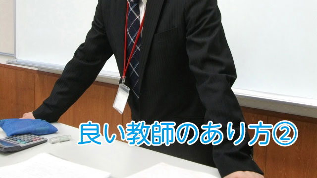

これまでの私の実践や多くの教師を見てきた経験から、良い教師とは次のような特徴というか条件をもっている者と思います。
1、授業が面白いこと
2、生徒の潜在能力を見る力がある
3、完全主義におちいらず向上心の種をうえつける
4、公正で客観的
5、教えすぎず生徒を信じること
今回はこの内1,2について話したいと思います。
面白い授業は生徒の興味関心を引き出す
これは絶対条件です。
つまらない授業、退屈な授業は生徒にとって苦業以外の何物でもありません。一部の知的好奇心の強い者やハナから授業を当てにせず、勝手に自分で勉強できる生徒ならともかく、多くの子どもにとって魅力的で面白い授業は教科に対する興味や関心のきっかけとなるからです。
しかし実際に学校で行われる授業はどうでしょう。公立私立を問わず、小学校から大学まで「つまらない授業」が横行しているのではないでしょうか。
もしそうならそれは教師が「面白い授業」をやろうとしていない。正確に言えば、そんなことは重要な仕事とは思っていないからです。
面白い授業イコール邪道とでも見なしているのかも知れません。これは残念なことです。
ところで私の言う「面白い授業」とは漫談的な面白おかしさではなく、単なる話術の巧みさを指しているのでもありません。
そうではなく、教科の魅力を伝えるために教師自らが最大限に工夫した結果として授業は面白くなると言いたいのです。
方法は先生の個性によってマチマチで構わないのです。教科の歴史について話すこともあれば、身近な話題やニュースに結びつけて例え話をするでもゲーム感覚で盛り上げるでも何でもよいのです。
退屈でつまらない授業は生徒を受け身にし、学習意欲をも奪ってしまいます。面白い授業は、だから教師の仕事にとってもっとも基本かつ必然の技術といえます。
私事ですが、私の経営していた塾では新人講師に対してはとにかく生徒を退屈にさせない、聞いてもらえる授業の構築をまず徹底的に訓練しました。
するとたいていは1年も経つと「分かりやすい授業」「面白い授業」が行えるのです。
だから才能ではなく技術なのです。技術である以上訓練で身につけることができるということです。
新人のときに、生徒の興味を引き出す「面白い授業」の技術を徹底的に研修すれば学校の授業は格段に良くなるでしょう。
しかし新人に限らずベテラン教師であっても工夫することで授業レベルは向上します。現にある学校で50代の教師がアクティブラーニングの手法を取り入れた結果、見違えるように面白い授業になったのを見たことがあります。生徒の反応もそれまでになく良好になり、生徒自身もその変化に驚き確かな手応えを感じたようでした。
生徒の潜在能力を見抜く
私が良い教師かどうかを判定する際、ひとつの基準にしていることがあります。
それは教師が生徒の「現状」しか見ていないか、将来的に伸びる「可能性」をも考慮しているかどうかということです。
ダメな先生は「あいつはやって来ない」とか「集中力がない。やる気がない」と目の前の生徒の「現状」を見てすぐに決めつけてしまいます。
それに対して良い先生は生徒の隠れた才能や長所を見抜いてそこに働きかけようとします。短所より長所、表面より内奥、現状のマイナスより将来の可能性を見い出している。
当り前ですが人は見た目だけでは隠れた才能や利点はなかなか分かりません。人を見抜くにはある程度の人生経験も必要です。
しかし教師の自然な人間的成熟を待っている余裕はありません。
というのも若い教師ほど「俺は一生懸命やっているのに応えてくれない生徒の方が悪い」と相手のせいにしがちで、そうなると常に悪いのは生徒であって自分ではないという固定観念をもったままベテランになってしまうからです。
だからこれも早くから先生を「教育」する必要があるといえます。
まず第1は「何があっても生徒のせいにしない」ということ。これを徹底することです。
これまた私の経験を話すと、若い先生方は最初は不服そうにしますが「生徒が言うことを聞かないのは先生の指導力不足」「やる気を起こさせるのが先生の役目」とくり返すことで変わってきます。
「ではどうすれば生徒はやる気になるか」を考えざるを得なくなるからです。悩んでいるうちに様々なアプローチを考えるわけです。
そのうち、ただ「やって来い」だけでは生徒の心に響かないことに気づき、もっと生徒の様々な面を観察しついに隠れた能力や特性、長所を見い出すのです。そうしてそこに働きかけることで生徒の潜在能力や意欲を引き出すコツをつかむというわけです。
教師の役目はただ学力の向上だけにあるのではなく、生徒の潜在能力（向いている分野や生徒自身も気づいていない長所など）を見抜いて、励まし自信をもたせ生徒が人生を切りひらいていくきっかけを与えることも重要な要素です。
そうすればたとえ学力が低くともコンプレックスがあろうとも、自分は前向きに人生を歩んでもよいのだ。あるいは一歩進んで自分も何事かを成す力があるのかも知れないというポジティブな姿勢が生徒に芽ばえることも珍しくありません。
第2に大切なことは、教師に対して初歩的な心理学の勉強を課すことです。
教師は人間相手の仕事であるのに全体に人間心理の基礎的知識さえもちあわせていない人が多いからです。
これも私の経験で実証済みですが、心理学の基礎的知識があればカウンセリングの手法やコーチングの技術も比較的容易に身につけやすいのです。
初歩的なものでよいから心理学の知識を土台にもつことによって、生徒を表面的に判断するのではなくより内面にまで踏みこんで観察することができるようになるのです。
通り一遍の研修ではなく、もし学校が組織的に教師に人間心理についての基本を学ばせる体制があれば生徒を今よりもずっと伸ばすことができるのは間違いありません。
現在のように生徒指導を個々の教師に丸投げしている状態は一刻も早く改善する必要があります。なぜなら先生の能力や資質に頼るやり方は当然その質においてバラツキが激しく、生徒にとってはなはだ不公平と言わざるを得ないからです。
心理学やコーチングの知識は生徒指導にとって有効なツールでありその道具（ツール）をもたないのはあまりにもったいないと感じます。
何よりも教師自身が勉強しなければならないし、その姿勢をもつことが生徒へもプラスのフィードバックとなるのは明らかだからです。
次回は残り3つの条件についてお話します。